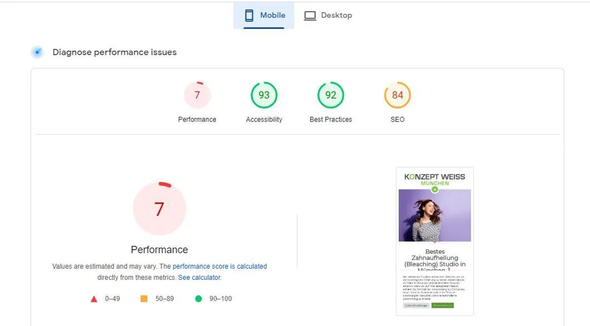
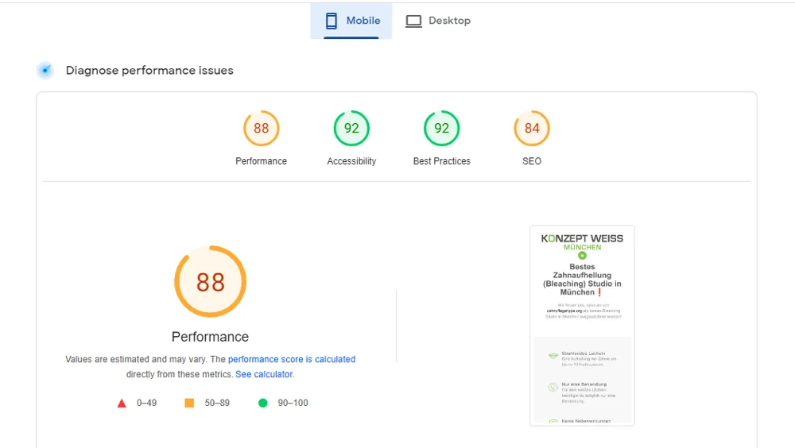
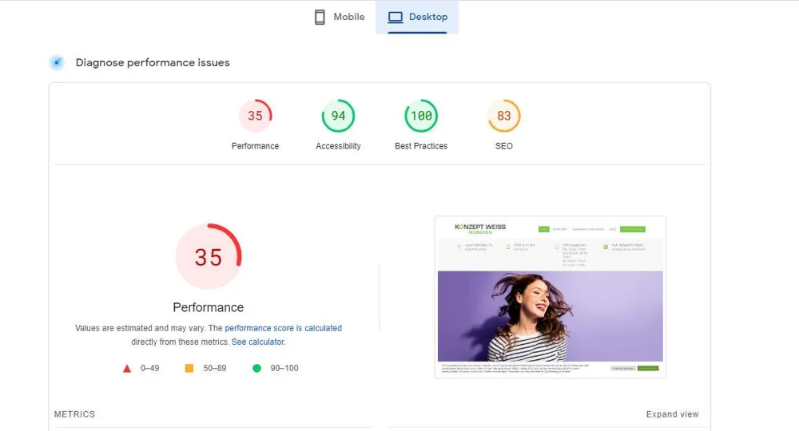
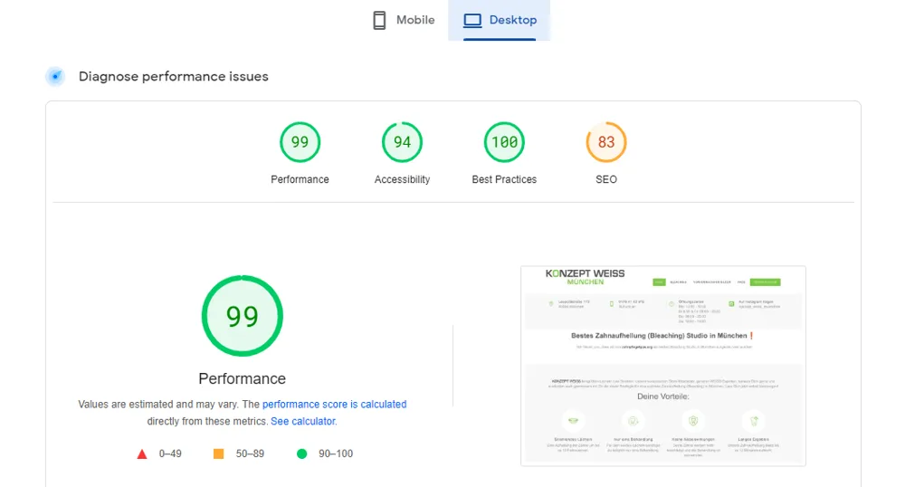

Case study 01
Konzept Weiss München
konzept-weiss-muenchen.de ↗Challenge: The site was slow on both devices. Google PageSpeed gave it 7 on mobile and 35 on desktop.
What we did
- Compressed and converted 2,477 image files, then served them as WebP.
- Cut unneeded JavaScript and CSS and handled render-blocking resources.
- Used EWWW Image Optimizer, WebP Express, WP Rocket and Perfmatters.
Mobile score7 → 88
Desktop score35 → 99
2,477images converted to WebP




Before